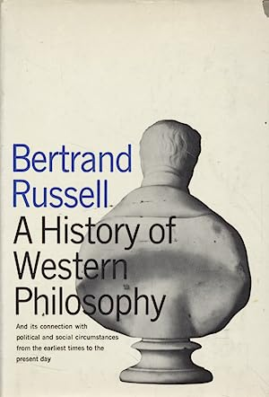

Russell's History of Western Philosophy
Friday July 7, 2023
Russell attempts to understand all of western social, political, and philosophical history in one charming and often funny book. His attitude is frequently as expressed on page 760: “This may seem odd, but that is not my fault.” Russell is a fine guide through the weird world of human thought, highlighting important developments and gaps.
Summarizing several levels further, here are nine big names in western philosophy:
- Pythagoras (570–495) mathematical reasoning (also much silliness)
- Socrates (470–399) Socratic method (questioning), fixation on definitions
- Plato (428–348) Realm of Ideals (and other silliness)
- Aristotle (384–322) syllogisms (and fairly bad science)
- Descartes (1596–1650) cogito (“I think, therefore I am.”)
- Locke (1632–1704) empiricism, social contract
- Hume (1711–1776) scepticism re: induction, causation
- Kant (1724–1804) Critique of Pure Reason (synthetic a priori), categorical imperative
- Hegel (1770–1831) dialectic (thesis/antithesis/synthesis; really from Fichte)

To teach how to live without certainty, and yet without being paralyzed by hesitation, is perhaps the chief thing that philosophy, in our age, can still do for those who study it. (page xiv)
Modern philosophy begins with Descartes, whose fundamental certainty is the existence of himself and his thoughts, from which the external world is to be inferred. This was only the first stage in a development, through Berkeley and Kant, to Fichte, for whom everything is only an emanation of the ego. This was insanity, and, from this extreme, philosophy has been attempting, ever since, to escape into the world of every-day common sense. (page xxi)
Social cohesion is a necessity, and mankind has never yet succeeded in enforcing cohesion by merely rational arguments. (page xxiii)
The gentleman is to be defined as one of a society of equals who live on slave labour, or at any rate upon the labour of men whose inferiority is unquestioned.
...
Whatever may be thought of a social system which tolerates slavery, it is to gentlemen in the above sense that we owe pure mathematics. (page 34)
On pages 35-36 Russell notes the Pythagorean schism between arithmetic and geometry, which led to much confusion.
The influence of geometry upon philosophy and scientific method has been profound. Geometry, as established by the Greeks, starts with axioms which are (or are deemed to be) self-evident, and proceeds, by deductive reasoning, to arrive at theorems that are very far from self-evident. The axioms and theorems are held to be true of actual space, which is something given in experience. It thus appeared to be possible to discover things about the actual world by first noticing what is self-evident and then using deduction. This view influenced Plato and Kant, and most of the intermediate philosophers. When the Declaration of Independence says “we hold these truths to be self-evident,” it is modeling itself on Euclid. The eighteenth-century doctrine of natural rights is a search for Euclidean axioms in politics. The form of Newton's Principia, in spite of its admittedly empirical material, is entirely dominated by Euclid. Theology, in its exact scholastic forms, takes its style from the same source. Personal religion is derived from ecstasy, theology from mathematics, and both are to be found in Pythagoras. (pages 36-37)
“The certain truth there is no man who knows, nor ever shall be, about the gods and all the things whereof I speak. Yea, even if a man should chance to say something utterly right, still he himself knows it not—there is nowhere anything but guessing.” (page 40, quoting Xenophanes from Bevan, 1913)
The search for something permanent is one of the deepest instincts leading men to philosophy. (page 45)
One of the main ambitions of philosophers has been to revive hopes that science seemed to have killed. (page 47)
... the ethical and religious preoccupations which, passing from the Pythagoreans to Socrates and from Socrates to Plato, brought an obscurantist bias into Greek philosophy. (page 63)
Causation must start from something, and wherever it starts no cause can be assigned for the initial datum. The world may be attributed to a Creator, but even then the Creator Himself is unaccounted for. (page 66)
When we ask “why?” concerning an event, we may mean either of two things. We may mean: “What purpose did this event serve?” or we may mean: “What earlier circumstances caused this event?” The answer to the former question is a teleological explanation, or an explanation by final causes; the answer to the latter question is a mechanistic explanation. I do not see how it could have been known in advance which of these two questions science ought to ask, or whether it ought to ask both. But experience has shown that the mechanistic question leads to scientific knowledge, while the teleological question does not. The atomists asksed the mechanistic question, and gave a mechanistic answer. Their successors, until the Renaissance, were more interested in the teleological question, and thus led science up a blind alley. (page 67)
Plato is always concerned to advocate views that will make people what he thinks virtuous; he is hardly ever intellectually honest, because he allows himself to judge doctrines by their social consequences. Even about this, he is not honest; he pretends to follow the argument and to be judging by purely theoretical standards, when in fact he is twisting the discussion so as to lead to a virtuous result. He introduced this vice into philosophy, where it has persisted ever since. It was probably largely hostility to the Sophists that gave this character to his dialogues. One of the defects of all philosophers since Plato is that their inquiries into ethics proceed on the assumption that they already know the conclusions to be reached. (page 79)
A stupid man's report of what a clever man says is never accurate, because he unconsciously translates what he hears into something that he can understand. (page 83)
The earliest of the Platonic dialogues, which are generally supposed to be the most Socratic, are mainly occupied with the search for definitions of ethical terms. The Charmides is concerned with the definition of temperance or moderation; the Lysis with friendship; the Laches with courage. In all of these, no conclusion is arrived at, but Socrates makes it clear that he thinks it important to examine such questions. The Platonic Socrates consistently maintains that he knows nothing, and is only wiser than others in knowing that he knows nothing; but he does not think knowledge unobtainable. On the contrary, he thinks the search for knowledge of the utmost importance. He maintains that no man sins wittingly, and therefore only knowledge is needed to make all men perfectly virtuous.
The close connection between virtue and knowledge is characteristic of Socrates and Plato. To some degree, it exists in all Greek thought, as opposed to that of Christianity. In Christian ethics, a pure heart is the essential, and is at least as likely to be found among the ignorant as among the learned. This difference between Greek and Christian ethics has persisted down to the present day. (pages 91-92)
It has always been correct to praise Plato, but not to understand him. This is the common fate of great men. (page 105)
It seems to us unwise to have insisted on teaching geometry to the younger Dionysius, tyrant of Syracuse, in order to make him a good king, but from Plato's point of view it was essential. He was sufficiently Pythagorean to think that without mathematics no true wisdom is possible. This view implies oligarchy.
... Plato, in common with most Greek philosophers, took the view that leisure is essential to wisdom, which will therefore not be found among those who have to work for their living, but only among those who have independent means, or who are relieved by the state from anxieties as to their subsistence. This point of view is essentially aristocratic. (page 106)
It might be suggested that men could be given political wisdom by a suitable training. But the question would arise: what is a suitable training? And this would turn out to be a party question.
The problem of finding a collection of “wise” men and leaving the government to them is thus an insoluble one. That is the ultimate reason for democracy. (page 107)
Although all the rulers are to be philosophers, there are to be no innovations: a philosopher is to be, for all time, a man who understands and agrees with Plato. (page 115, on Plato's Utopia)
... the fundamental question of ethics and politics, namely: Is there any standard of “good” and “bad,” except what the man using these words desires? (page 117)
... any one who agrees with Thrasymachus will say: “There is no question of proving or disproving; the only question is whether you like the kind of State that Plato desires.” ... This is one of the issues in philosophy that are still open; on each side there are men who command respect. ... This problem is a difficult one, and I do not profess to be able to solve it. (page 118)
We may continue, if we like, to say that numbers are eternal, immutable, and so on, but we must add that they are logical fictions. (page 157)
Scepticism, as a doctrine of the schools, was first proclaimed by Pyrrho, ... (page 233)
The manner in which Arcesilaus taught would have had much to commend it, if the young men who learnt from him had been able to avoid being paralysed by it. He maintained no thesis, but would refute any thesis set up by a pupil. Sometimes he would himself advance two contradictory propositions on successive occasions, showing how to argue convincingly in favour of either. ... So great was the influence of Arcesilaus that the Academy remained sceptical for about two hundred years. (pages 235-236)
In the middle of this sceptical period, an amusing incident occurred. Carneades, a worthy successor of Arcesilaus as head of the Academy, was one of three philosophers sent by Athens on a diplomatic mission to Rome in the year 156 B.C. He saw no reason why his ambassadorial dignity should interfere with the main chance, so he announced a course of lectures in Rome. The young men, who, at that time, were anxious to ape Greek manners and acquire Greek culture, flocked to hear him. His first lecture expounded the views of Aristotle and Plato on justice, and was thoroughly edifying. His second, however, was concerned in refuting all that he had said in his first, not with a view of establishing opposite conclusions, but merely to show that every conclusion is unwarranted. (page 236)
Without answering the arguments of the Sceptics, the ancient world turned aside from them. (page 239)
Another doctrine of theirs [the Stoics] in theory of knowledge was more influential, though more questionable. This was their belief in innate ideas and principles. Greek logic was wholly deductive, and this raised the question of first premises. First premises had to be, at least in part, general, and no method existed of proving them. The Stoics held that there are certain principles, which are luminously obvious, and are admitted by all men; these could be made, as in Euclid's Elements, the basis of deduction. Innate ideas, similarly, could be used as the starting-point of definitions. This point of view was accepted throughout the Middle Ages, and even by Descartes. (page 269)
... the most effective men of action are often intellectually second-rate. (page 381)
Damian was the author of a treatise On Divine Omnipotence, which maintained that God can do things contrary to the law of contradiction, and can undo the past. (page 413)
It seems Russell has this one wrong; Damian didn't say quite that.
In Hume, the empiricist philosophy culminated in a scepticism which none could refute and none could accept. (page 494)
The ancient world found an end to anarchy in the Roman Empire, but the Roman Empire was a brute fact, not an idea. The Catholic world sought an end to anarchy in the Church, which was an idea, but was never adequately embodied in fact. Neither the ancient nor the medieval solution was satisfactory—the one because it could not be idealized, the other because it could not be actualized. The modern world, at present, seems to be moving towards a solution like that of antiquity: a social order imposed by force, representing the will of the powerful rather than the hopes of common men. The problem of a durable and satisfactory social order can only be solved by combining the solidity of the Roman Empire with the idealism of Saint Augustine's City of God. To achieve this a new philosophy will be needed. (pages 494-495)
The political conditions of the Renaissance favoured individual development, but were unstable; the instability and the individualism were closely connected, as in ancient Greece. A stable social system is necessary, but every stable system hitherto devised has hampered the development of exceptional artistic or intellectual merit. How much murder and anarchy are we prepared to endure for the sake of great achievements such as those of the Renaissance? In the past, a great deal; in our own time, much less. No solution of this problem has hitherto been found, although increase of social organization is making it continually more important. (page 503)
There are some respects in which the concepts of modern theoretical physics differ from those of the Newtonian system. To begin with, the conception of “force,” which is prominent in the seventeenth centurey, has been found to be superfluous. “Force,” in Newton, is the cause of change of motion, whether in magnitude or direction. To notion of cause is regarded as important, and force is conceived imaginatively as the sort of thing that we experience when we push or pull. For this reason it was considered an objection to gravitation that it acted at a distance, and Newton himself conceded that there must be some medium by which is was transmitted. Gradually it was found that all the equations could be written down without bringing in forces. What was observable was a certain relation between acceleration and configuration; to say that this relationship was brought about by the intermediacy of “force” was to add nothing to our knowledge. Observation shows that the planets have at all times an acceleration towards the sun, which varies inversely as the square of their distance from it. To say that this is due to the “force” of gravitation is merely verbal, like saying that opium makes people sleep because it has a dormitive virtue. The modern physicist, therefore, merely states formulæ which determine accelerations, and avoids the word “force” altogether. “Force” was the faint ghost of the vitalist view as to the causes of motions, and gradually the ghost has been exorcized. (page 539)
After five years spent in retirement, he [Francis Bacon] died of a chill caught while experimenting on refrigeration by stuffing a chicken full of snow. (page 542)
One of the most famous parts of Bacon's philosophy is his enumeration of what he calls “idols,” by which he means bad habits of mind that cause people to fall into error. Of these he enumerates five kinds. “Idos of the tribe” are those that are inherent in human nature; he mentions in particular the habit of expecting more order in natural phenomena than is actually to be found. “Idols of the cave” are personal prejudices, characteristic of the particular investigator. “Idols of the market-place” are those that have to do with the tyranny of words and the difficulty of escaping from their influence over our minds. “Idols of the theatre” are those that have to do with received systems of thought; of these, naturally Aristotle and the scholastics afforded him the most noteworthy instances. Lastly there are “idols of the schools,” which consist in thinking that some blind rule (such as the syllogism) can take the place of judgement in investigation. (page 544)
I think this is interesting as compared to modern collections of logical fallacies, like Almossawi's cute Bad Arguments.
Bacon's inductive method is faulty through insufficient emphasis on hypothesis. He hoped that mere orderly arrangement of data would make the right hypothesis obvious, but this is seldom the case. As a rule, the framing of a hypothesis is the most difficult part of scientific work, and the part where great ability is indispensable. So far, no method has been found which would make it possible to invent hypotheses by rule. Usually some hypothesis is a necessary preliminary to the collection of facts, since the selection of facts demands some way of determining relevance. Without something of this kind, the mere multiplicity of facts is baffling. (pages 544-545)
This is related to modern thought around data science, data mining, etc.
So long as national States exist and fight each other, only inefficiency can preserve the human race. (page 557)
This is in relation to Hobbes's Leviathan...
Therefore corporeal nature in general, involving such matters as extension, magnitude, and number, is less easy to question than beliefs about particular things. Arithmetic and geometry, which are not concerned with particular things, are therefore more certain than physics and astronomy; they are true even of dream objects, which do not differ from real ones as regards number and extension. Even in regard to arithmetic and geometry, however, doubt is possible. It may be that God causes me to make mistakes whenever I try to count the sides of a square or add 2 to 3. Perhaps it is wrong, even in imagination, to attribute such unkindness to God, but there might be an evil demon, no less cunning and deceitful than powerful, employing all his industry in misleading me. If there be such a demon, it may be that all the things I see are only illusions of which he makes use as traps for my credulity. (pages 563-564)
But these considerations have not disposed of the sceptical arguments which threw doubt on the existence of the external world. This can only be done by first proving the existence of God. (page 566)
Spinoza (1634-77) is the noblest and most lovable of the great philosophers. Intellectually, some others have surpassed him, but ethically he is supreme. (page 569)
[Arnauld had a negative opinion of some of the ideas Spinoza had related in letters to Arnauld.] This hostile opinion no doubt led Leibniz, thenceforth, to adopt a policy of secrecy as to his real thoughts on philosophical subject. (page 591)
I wonder how often this kind of thing has happened through history.
There is a general belief (which I have never understood) that it is better to exist than not to exist; on this ground children are exhorted to be grateful to their parents. (page 594)
“For where is the man that has uncontestable evidence of the truth of all that he holds, or of the falsehood of all he condemns; or can say, that he has examined to the bottom all his own or other men's opinions? The necessity of believing without knowledge, nay, often upon very slight grounds, in this fleeting state of action and blindness we are in, should make us more busy and careful to inform ourselves than to restrain others. ... There is reason to think, that if men were better instructed themselves, they would be less imposing on others.” (page 609, quoting Locke)
Locke may be regarded as the founder of empiricism, which is the doctrine that all our knowledge (with the possible exception of logic and mathematics) is derived from experience. Accordingly the first book of the Essay is concerned in arguing, as against Plato, Descartes, and the scholastics, that there are no innate ideas or principles. (page 609)
Empiricism and idealism alike are faced with a problem to which, so far, philosophy has found no satisfactory solution. This is the problem of showing how we have knowledge of other things than ourself and the operations of our own mind. (page 611)
No one has yet succeeded in inventing a philosophy at once credible and self-consistent. (page 613)
Belief in the harmony between private and public interests is characteristic of liberalism, and long survived the theological foundation that it had in Locke.
Locke states that liberty depends upon the necessity of pursuing true happiness and upon the government of our passions. This opinion he derives from his doctrine that private and public interests are identical in the long run, though not necessarily over short periods.
I feel like there's a prisoner's dilemma in here.
The hereditary principle has almost vanished from politics. During my lifetime, the emperors of Brazil, China, Russia, Germany, and Austria have disappeared, to be replaced by dictators who do not aim at the foundation of a hereditary dynasty. Aristocracy has lost its privileges throughout Europe, except in England, where they have become little more than a historical form. All this, in most countries, is very recent, and has much to do with the rise of dictatorships, since the traditional basis of power has been swept away, and the habits of mind required for the successful practice of democracy have not had time to grow up. There is one great institution that has never had any hereditary element, namely, the Catholic Church. We may expect the dictatorships, if they survive, to develop gradually a form of government analogous to that of the Church. This has already happened in the case of the great corporations in America, which have, or had until Pearl Harbor, powers almost equal to those of the government. (pages 621-622)
In Locke's theory of government, I repeat, there is little that is original. In this Locke resembles most of the men who have won fame for their ideas. As a rule, the man who first thinks of a new idea is so much ahead of his time that every one thinks him silly, so that he remains obscure and is soon forgotten. Then, gradually, the world becomes ready for the idea, and the man who proclaims it at the fortunate moment gets all the credit. So it was, for example, with Darwin; poor Lord Monboddo was a laughing-stock. (page 624)
Monboddo was also a nudist, apparently?
[One view on the origin of government] maintained that God had bestowed power on certain persons, and that these persons, or their heirs, constituted the legitimate government, rebellion against which is not only treason, but impiety. This view was sanctioned by sentiments of immemorial antiquity: in almost all early civilizations, the king is a sacred person. Kings, naturally, considered it an admirable theory. Aristocracies had motives for supporting it and motives for opposing it. In its favour was the fact that it emphasized the hereditary principle, and that gave august support to resistance against the upstart merchant class. Where the middle class was more feared or hated by the aristocracy than the king was, these motives prevailed. Where the contrary was the case, and especially where the aristocracy had a chance of obtaining supreme power itself, it tended to oppose the king, and therefore to reject theories of divine right. (page 629)
This is just a really good example of Russell's pragmatic, realpolitik explanations: he frequently points out that people tend to believe whatever tends to advantage them.
The question of the rights of the individual as against the government is a very difficult one. It is too readily assumed by democrats that, when the government represents the majority, it has a right to coerce the minority. Up to a point, this must be true, since coercion is of the essence of government. But the divine right of majorities, if pressed too far, may become almost as tyrannical as the divine right of kings. (page 633)
Berkeley (Chapter XVI, starting page 647) is interesting for his focus on perception. “esse est percipi” It seems too strong to say that we can know that things don't exist without being perceived though. On what basis?
It remains to be asked whether any meaning can be attached to the words “mind” and “matter.” Every one knows that “mind” is what an idealist thinks there is nothing else but, and “matter” is what a materialist thinks the same about. The reader knows also, I hope, that idealists are virtuous and materialists are wicked. But perhaps there may be more than this to be said.
My own definition of “matter” may seem unsatisfactory; I should define it as what satisfies the equations of physics. There may be nothing satisfying these equations; in that case either physics of the concept “matter” is a mistake. If we reject substance, “matter” will have to be a logical construction. Whether it can be any construction composed of events—which may be partly inferred—is a difficult question, but by no means an insoluble one.
As for “mind,” when substance has been rejected a mind must be some group or structure of events. The grouping must be effected by some relation which is characteristic of the sort of phenomena we wish to call “mental.” We may take memory as typical. We might—though this would be rather unduly simple—define a “mental” event as one which remembers or is remembered. Then the “mind” to which a given mental event belongs is the group of events connected with the given event by memory-chains, backwards or forwards.
It will be seen that, according to the above definition, a mind and a piece of matter are, each of them, a group of events. There is no reason why every event should belong to a group of one kind or the other, and there is no reason why some events should not belong to both groups; therefore some events may be neither mental nor material, and other events may be both. As to this, only detailed empirical considerations can decide. (pages 658-659)
This is about as nearly as Russell gives his own metaphysics. He has some idea that “events” are fundamental. I don't see any clear reason to think that his ideas here are good.
In the Cartesian philosophy, as in that of the Scholastics, the connection of cause and effect was supposed to be necessary, as logical connections are necessary. The first really serious challenge to this view came from Hume, with whom the modern philosophy of causation begins. (page 664)
“We have no other notion of cause and effect, but that of certain objects, which have been always conjoined together... We canot penetrate into the reason of the conjunction.” (page 665, quoting Hume)
“All probable reasoning is nothing but a species of sensation. 'Tis not solely in poetry and music, we must follow our taste and sentiment, but likewise in philosophy. When I am convinced of any principle, 'tis only an idea, which strikes more strongly upon me. When I give the preference to one set of arguments above another, I do nothing but decide from my feeling concerning the superiority of their influence. Objects have no discoverable connexion together; nor is it from any other principle but custom operating upon the imagination, that we can draw any inference from the appearance of one to the existence of another.” (page 670, quoting Hume)
The growth of unreason throughout the nineteenth century and what has passed of the twentieth is a natural sequel to Hume's destruction of empiricism. (page 673)
What these arguments [against induction] prove—and I do not think the proof can be controverted—is that induction is an independent logical principle, incapable of being inferred either from experience or from other logical principles, and that without this principle science is impossible. (page 674)
Man is not a solitary animal, and so long as social life survives, self-realization cannot be the supreme principle of ethics. (page 684)
After satisfying himself that there is a God, the Vicar [Rousseau] goes on to consider rules of conduct. “I do not deduce these rules,” he says, “from the principles of a high philosophy, but I find them in the depths of my heart, written by Nature in ineffaceable characters.” From this he goes on to develop the view that conscience is in all circumstances an infallible guide to right action. “Thanks be to Heaven,” he concludes this part of his argument, “we are thus freed from all this terrifying apparatus of philosophy; we can be men without being learned; dispensed from wasting our life in the study of morals, we have at less cost a more assured guide in this immense labyrinth of human opinions.” Our natural feelings, he contends, lead us to serve the common interest, while our reason urges selfishness. We have therefore only to follow feeling rather than reason in order to be virtuous. (page 693)
Rouseau is a dork.
“categorical imperative” ... “Act only according to a maxim by which you can at the same time will that it shall become a general law.” (pages 710-711)
Kant...
To frame a philosophy capable of coping with men intoxicated with the prospect of almost unlimited power and also with the apathy of the powerless is the most pressing task of our time. (page 729)
This may seem odd, but that is not my fault. (page 760)
Russell is saying this of his comparison between Nietzsche's superman and Siegfried as in Wagner's Ring cycle, but it is also a fair summary of Russell's attitude toward most ideas of most philosophers.
One of the bad effects of an anti-intellectual philosophy, such as that of Bergson, is that it thrives upon the errors and confusions of the intellect. Hence it is led to prefer bad thinking to good, to declare every momentary difficulty insoluble, and to regard every foolish mistake as revealing the bankruptcy of intellect and the triumph of intuition. (page 803)
[William] James's doctrine of radical empiricism was first published in 1904, in an essay called “Does ‘Consciousness’ Exist?” The main purpose of this essay was to deny that the subject-object relation is fundamental. It had, until then, been taken for granted by philosophers that there is a kind of occurrence called “knowing,” in which one entity, the knower or subject, is aware of another, the thing known or the object. The knower was regarded as a mind or soul; the object known might be a material object, an eternal essence, another mind, or, in self-consciousness, identical with the knower. Almost everything in accepted philosophy was bound up with the dualism of subject and object. The distinction of mind and matter, the contemplative ideal, and the traditional notion of “truth,” all need to be radically reconsidered if the distinction of subject and object is not accepted as fundamental.
For my part, I am convinced that James was right on this matter, and would, on this ground alone, deserve a high place among philosophers. I had thought otherwise until he, and those who agreed with him, persuaded me of the truth of his doctrine. But let us proceed to his arguments. (page 812)
By the form of the words, radical empiricism's focus on pure experience seems like it could be something I agree with. If experience is central, and James is denying a material existence of consciousness but not denying the state of being conscious, then maybe it's just linguistic weirdness, and just my preference to say instead that perhaps only consciousness exists. But the weirdness runs much deeper.
My thesis is that if we start with the supposition that there is only one primal stuff or material in the world, a stuff of which everything is composed, and if we call that stuff pure experience, then knowing can easily be explained as a particular sort of relation towards one another into which portions of pure experience may enter. (James's essay)
This is as ridiculous as Leibniz's monads. What a jump! To claim you can say what the whole universe is made of! To give it such a name!
That entity [consciousness] is fictitious, while thoughts in the concrete are fully real. But thoughts in the concrete are made of the same stuff as things are. (James's essay)
An underlying bad idea throughout, here, is that the physical world is in a deep sense identical to our mental perception and ideas of the physical world. I think this comes from the sense we have of directly knowing the world around us, as when we see a cup, reach out and touch it, and are assured of its existence as we expected. I would like to get James a VR headset.
I guess this is where Russell gets his ideas about “events” that can be combinations of mental and physical.
At least James doesn't deny conscious experience. Why he needs to go all the way to a weird monism is beyond me.
He defines “pure experience” as “the immediate flux of life which furnishes the material to our later reflection.” (page 813, quoting James's Essays in Radical Empiricism)
The concept of “truth” as something dependent upon facts largely outside human control has been one of the ways in which philosophy hitherto has inculcated the necessary element of humility. When this check upon pride is removed, a further step is taken on the road towards a certain kind of madness—the intoxication of power which invaded philosophy with Fichte, and to which modern men, whether philosophers or not, are prone. I am persuaded that this intoxication is the greatest danger of our time, and that any philosophy which, however unintentionally, contributes to it is increasing the danger of vast social disaster. (page 828)
Modern analytical empirical, of which I have been giving an outline, differs from that of Locke, Berkeley, and Hume by its incorporation of mathematics and its development of a powerful logical technique. It is thus able, in regard to certain problems, to achieve definite answers, which have the quality of science rather than of philosophy. It has the advantage, as compared with the philosophies of the system-builders, of being able to tackle its problems one at a time, instead of having to invent at one stroke a block theory of the whole universe. Its methods, in this respect, resemble those of science. I have no doubt that, in so far as philosophical knowledge is possible, it is by such methods that it must be sought; I have also no doubt that, by these methods, many ancient problems are completely soluble.
There remains, however, a vast field, traditionally included in philosophy, where scientific methods are inadequate. This field includes ultimate questions of value; science alone, for example, cannot prove that it is bad to enjoy the infliction of cruelty. Whatever can be known, can be known by means of science; but things which are legitimately matters of feeling lie outside its province.
Philosophy, throughout its history, has consisted of two parts inharmoniously blended: on the one hand a theory as to the nature of the world, on the other an ethical or political doctrine as to the best way of living. The failure to separate these two with sufficient clarity has been a source of much confused thinking. (page 834)
This is in the last chapter of the book, The Philosophy of Logical Analysis.